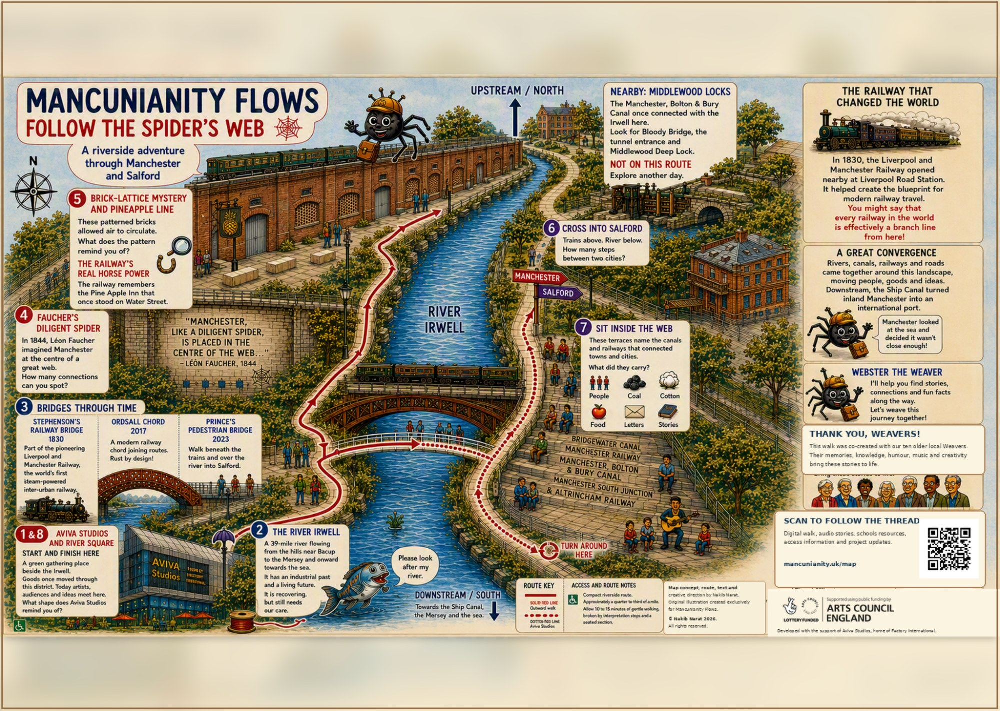

Follow the Spider's Web
A riverside adventure through Manchester and Salford

This page will soon include the downloadable map, audio stories, original music, access information, schools resources and material from the Mancunianity Archive.
Start and finish: Aviva Studios and River Square.
The walk follows the River Irwell between Manchester and Salford, crossing Prince's pedestrian bridge beneath the Ordsall Chord.
../ Return to the Mancunianity homepage